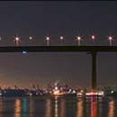

Login for Updates
Latest News
925 passengers arrive in Guwahati city by flights
On the second day of the resumption of domestic flight services in the country, as many as 925 people arrived in Guwahati by 9 flights on Tuesday. Similarly, 592 passengers departed by 9 flights to various parts of the country. more...
Jobs lost, two Assam youths take bike ride home from Chennai
Two youths from Jorhat, who lost their jobs with a software company in Chennai during the lockdown, returned home on Saturday. They covered 3,000 km in this journey. more...
Welcome to our website
 This page is all about what you want to know about the famous Guwahati city. You can explore different facilities provided by us. Also you can check the tourists section if you want to visit different places in Guwahati.
Scroll through the website to know more about this city of different art and culture.
Guwahati is the largest city in the Indian state of Assam and also the largest metropolis in northeastern India. A major riverine port city along with hills is one of the fastest growing cities in India, Guwahati is situated on the south bank of the Brahmaputra.
Fun Facts
Learn some crazy fun facts about Guwahati.
- When KFC first opened in Guwahati, the queue was over 1 Km.
- Commerce College is known more for Chicken momos than education.
- Tourists come here to and discover that Guwahati is not on a hill and also that it is safe.
Know more
Know more interesting facts about Guwahati.
- It has the longest male river Brahmaputra, in the world.
- Best Time to Visit: October - April when days are relatively cooler and nights pleasant.
- Local Languages: Assamese, Bengali, Bodo, Mishing, Karbi, bits of English